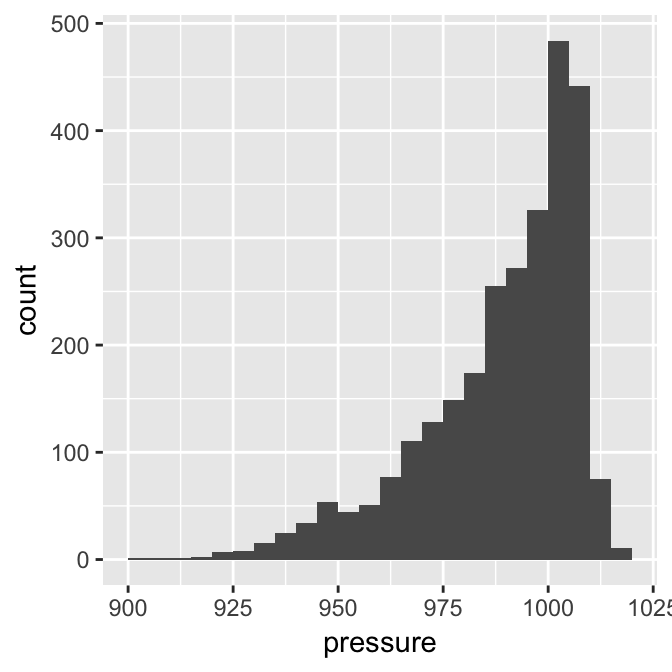
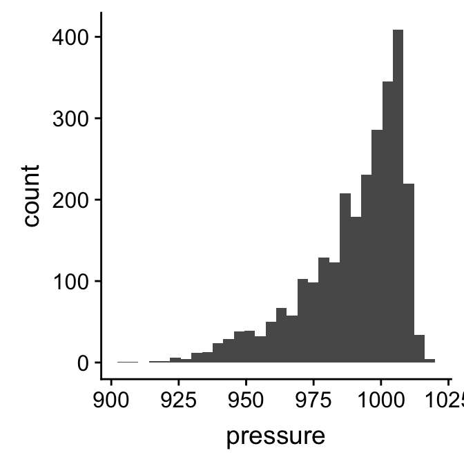
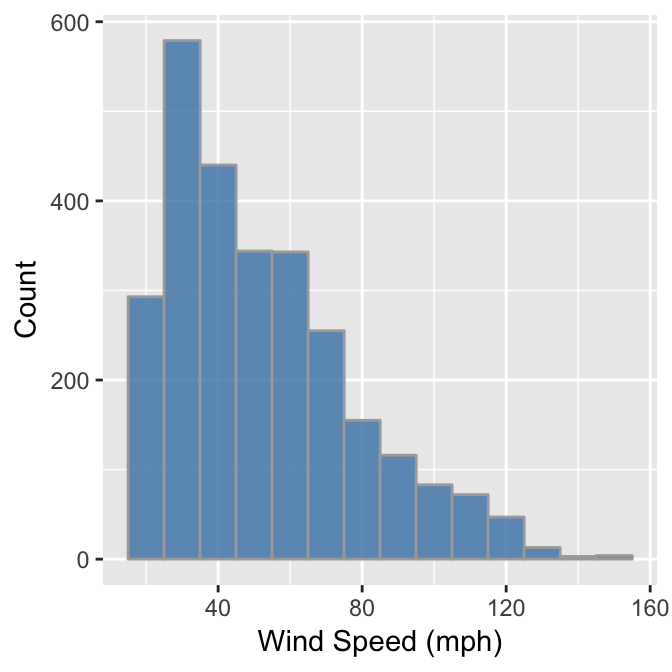
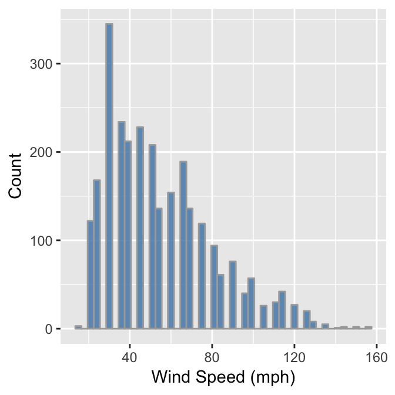
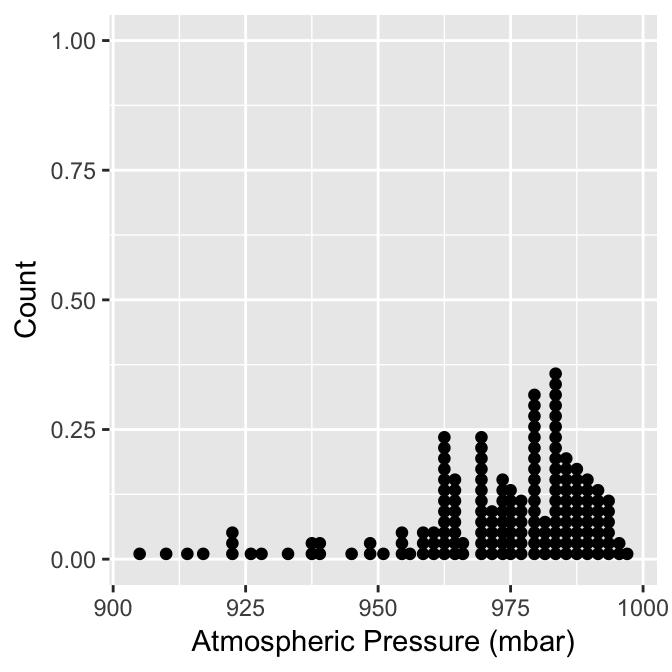

Chapter 20 Exploring one numeric variable
This chapter will consider how to go about exploring the sample distribution of a numeric variable. Using the storms data from the nasaweather package (remember to load and attach the package), we’ll review some basic descriptive statistics and visualisations that are appropriate for numeric variables.
20.1 Understanding numerical variables
We’ll work with the wind and pressure variables in storms to illustrate the key ideas. Wind speed and atmospheric pressure are clearly numeric variables. We can say a bit more. They are both numeric variables that are measured on a ratio scale because zero really is zero: it makes sense to say that 20 mph is twice as fast as 10 mph and 1000 mbar exerts twice as much pressure on objects as 500 mbar. Are these continuous or discrete variables? Think about the possible values that wind speed and atmospheric pressure can take. A wind speed and atmospheric pressure of 40.52 mph and 1000.23 mbar are perfectly reasonable values, so fundamentally, these are continuous variables.
The simplest way to understand our data, if not the most effective, is to view it in its raw form. We can always use the View function to do this in RStudio. However, since this doesn’t work on a web page, we’ll take a quick look at the first 100 values of the wind and pressure variables in storms. We can print these to the Console by extracting each of them with the $ operator, using the [ construct to subset the first 100 elements of each vector:
# first 100 values of atmospheric pressure
storms$pressure[1:100]## [1] 1005 1004 1003 1001 997 995 987 988 988 990 990 993 993 994
## [15] 995 995 992 990 988 984 982 984 989 993 995 996 997 1000
## [29] 997 990 992 992 993 1019 1019 1018 1017 1016 1013 1011 1009 1007
## [43] 1004 1001 997 997 997 997 996 995 993 991 990 989 1012 1012
## [57] 1012 1011 1011 1011 1010 1010 1006 1008 1009 1010 1009 1006 1006 1005
## [71] 1004 999 999 997 991 995 997 995 994 994 995 996 997 997
## [85] 998 998 999 999 1000 1000 1001 1002 1003 1005 1005 1009 1008 1008
## [99] 1008 1007# first 100 values of wind speed
storms$wind[1:100]## [1] 30 30 35 40 50 60 65 65 65 60 60 45 30 35 35 40 40 45 45 45 50 50 50
## [24] 45 40 40 40 40 40 40 40 35 35 20 20 20 25 25 30 30 30 35 40 60 60 55
## [47] 50 50 50 50 50 50 45 40 25 25 25 30 30 30 30 30 35 35 35 40 40 45 45
## [70] 45 45 50 50 55 60 60 60 55 55 55 50 50 50 50 50 50 50 50 50 50 50 50
## [93] 50 50 50 25 30 30 30 30Notice that even though pressure is continuous variables it looks like a discrete variable because it has only been measured to the nearest whole millibar. Similarly, wind is only measured to the nearest 5 mph. These differences reflect the limitations of the methodology used to measure each variable, e.g. measuring wind speed is hard because it varies so much in space and time.
This illustrates an important idea: we can’t just look at the values a numeric variable takes in a sample to determine whether it is discrete or continuous. In one sense the pressure variable is a discrete variable because of the way it was measured, even though we know that atmospheric pressure is really continuous.
Whether we treat it as continuous or discrete is an analysis decision. These sorts of distinctions often don’t matter too much when we’re exploring data, but they can matter when we’re deciding how to analyse it statistically. We have to make a decision about how to classify a variable based on knowledge of its true nature and the measurement process. For example, imagine that we were only able to measure wind speed to the nearest 25 mph. In this situation we would only “see” a few different categories of wind speed, so it might be sensible to treat the wind variable as an ordinal, categorical variable.
20.2 Graphical summaries
We only looked at the first 100 values of the wind and pressure variables because the storms data set is too large to look everything at once. It’s hard to say much about the sample distribution of these two variables by just looking at such a small subset of values. If the data set has been sorted, these might not even be representative of the wider sample.
What else might we do? One useful tool is ‘binning’. The idea behind binning a variable is very simple. It involves two steps. First, we take the set of possible values of our numeric variable and divide this into a equal sized, non-overlapping intervals. We can use any interval size we like, as long as it is large enough to span at least two observations some of the time, though in practice some choices are more sensible than others. We then have to work out how many values of the our variable fall inside each bin. The resulting set of counts tells us quiet a lot about the sample distribution.
let’s see how this works with an example. Binning is very tedious to do by hand, but as we might expect, there are a couple of base R function that can do this for us: cut and table. Here’s how to use these to bin the pressure variable into intervals of 10 mbar:
presure_bins <- cut(storms$pressure,
breaks = seq(900, 1020, by = 5), right = FALSE)
table(presure_bins)## presure_bins
## [900,905) [905,910) [910,915) [915,920) [920,925) [925,930)
## 0 1 2 2 7 4
## [930,935) [935,940) [940,945) [945,950) [950,955) [955,960)
## 14 23 35 44 47 39
## [960,965) [965,970) [970,975) [975,980) [980,985) [985,990)
## 79 81 156 127 170 240
## [990,995) [995,1000) [1000,1005) [1005,1010) [1010,1015) [1015,1020)
## 252 291 466 515 134 18We won’t explain how cut and table work as we only need to understand the output. The output of table is a named numeric vector. The names of each element describe an interval, and the corresponding values are the observation counts in that interval. What does this tell us? It shows that most pressure observations associated with storm systems are round about 1000 mbar. Values higher than 1000 mbar are rare, but a range of values below this are possible, with lower and lower values becoming less frequent.
These binned data tell us quite a lot about the sample distribution of pressure. It’s still difficult to perceive the information in this output when it is presented as a series of numbers. What we really need is some kind of visualisation to help us interpret these numbers. This is what a histogram provides. Histograms are designed to summarise the sample distribution of a variable by showing the counts of binned data as a series of bars. The position and width of each bar corresponds to an interval and the height shows the count. Here’s a histogram that corresponds to the binned data we just made:

This gives a clear summary of the sample distribution of pressure. It reveals: 1) the most common values, which are just above 1000 mbar; 2) the range of the data, which is about 100 mbar; and 3) the shape of the distribution, which is asymmetric, with a tendency toward low values.
We used ggplot2 to make that histogram. We could do this by building a new data set with the binned data, and then use this with ggplot2 to construct the histogram manually. There is a much easier way to achieve the same result though. Rather than do it one one step with a single R expression, we will break the process up into two steps, storing the the ggplot2 object as we build it.
The first step uses the ggplot function with aes to set up the default data and aesthetic mapping:
plt_hist <- ggplot(storms, aes(x = pressure))This is no different than the extended scatter plot example we stepped through earlier. The only difference is that a histogram requires only one aesthetic mapping. We supplied the argument x = pressure to aes because we want to display the map intervals associated with pressure to the x axis. We don’t need to supply an aesthetic mapping for the y axis because ggplot2 is going to handle this for us.
The second step adds a layer to the plt_hist object. We need to find the right geom_XX function to do this. Unsurprisingly, this is called geom_histogram:
plt_hist <- plt_hist + geom_histogram()
summary(plt_hist)## data: name, year, month, day, hour, lat, long, pressure, wind,
## type, seasday [2747x11]
## mapping: x = pressure
## faceting: <ggproto object: Class FacetNull, Facet>
## compute_layout: function
## draw_back: function
## draw_front: function
## draw_labels: function
## draw_panels: function
## finish_data: function
## init_scales: function
## map: function
## map_data: function
## params: list
## render_back: function
## render_front: function
## render_panels: function
## setup_data: function
## setup_params: function
## shrink: TRUE
## train: function
## train_positions: function
## train_scales: function
## vars: function
## super: <ggproto object: Class FacetNull, Facet>
## -----------------------------------
## geom_bar: na.rm = FALSE
## stat_bin: binwidth = NULL, bins = NULL, na.rm = FALSE, pad = FALSE
## position_stackLook at the text of the summary of the added layer below the ----. This shows that geom_histogram adds a stat to the layer, the stat_bin. What this means is that ggplot2 is going to take the raw pressure data and bin it for us. Everything we need to plot a histogram is now set up. Here’s the resulting plot:
plt_hist## `stat_bin()` using `bins = 30`. Pick better value with `binwidth`.
The resulting plot is not quite the same as the example we saw above because it uses different bins. It’s a good idea to play around with the bin size to arrive at an informative histogram. We set the properties of the geom_histogram to tweak this kind of thing—the binwidth argument adjusts the width of the bins used. Let’s construct the histogram again with 7 mbar wide bins, as well as adjust the colour scheme and axis labels a bit:
ggplot(storms, aes(x = pressure)) +
geom_histogram(binwidth = 7, fill = "steelblue", colour="darkgrey", alpha = 0.8) +
xlab("Atmospheric Pressure (mbar)") + ylab("Count")Whether or not that colour scheme is an improvement is a matter of taste. Mostly we wanted to demonstrate how the fill, colour, and alpha arguments change the output. Notice that the effect of increasing the bin width is to ‘smooth’ the histogram, i.e. this version looks less jagged than the last.
We can use pretty much the same R code to produce a histogram summarising the wind speed sample distribution:
ggplot(storms, aes(x = wind)) +
geom_histogram(binwidth = 10, fill = "steelblue", colour="darkgrey", alpha = 0.8) +
xlab("Wind Speed (mph)") + ylab("Count")
The only things that changed in this example were the aesthetic mapping and the bin width, which we set to 10. It reveals that the wind speed during a storm tends to be about 40 mph, though the range of wind speeds is about 100 mph and the shape of the distribution is asymmetric.
We have to choose the bin widths carefully. Remember that wind speed is measured to the nearest 5 mph. This means we should choose a bin width that is a multiple of 5 to produce a meaningful histogram. Look what happens if we set the bin width to 3:
ggplot(storms, aes(x = wind)) +
geom_histogram(binwidth = 3, fill = "steelblue", colour="darkgrey", alpha = 0.8) +
xlab("Wind Speed (mph)") + ylab("Count")
We end up with gaps in the histogram because some intervals do not include multiples of 5. This is not a good histogram because it fails to reliably summarise the distribution. Similar problems would occur if we chose a bin width that is greater than, but not a multiple of 5, because different bins would cover a different number of values that make up the wind variable. The take home message is that we have to know our data in order to produce meaningful summaries of it.
We’ll finish up this subsection by briefly reviewing one alternative to the histogram. Histograms are good for visualising sample distributions when we have a reasonable sample size (at least dozens, and ideally, hundreds of observations). They aren’t very effective when the sample is quite small. In this ‘small data’ situation it’s better to use something called a dot plot8.
Let’s use dplyr to extract a small(ish) subset of the storms data:
storms_small <-
storms %>%
filter(year == 1998, type == "Hurricane")This just extracts the subset of hurricane observations from 1998. The ggplot2 code to make a dot plot with these data is very similar to the histogram case:
ggplot(storms_small, aes(x = pressure)) +
geom_dotplot(binwidth = 2) +
xlab("Atmospheric Pressure (mbar)") + ylab("Count")
Here, each observation in the data adds one dot, and dots that fall into the same bin are stacked up on top of one another. The resulting plot displays the same information about a sample distribution as a histogram, but it tends to be more informative when there are relatively few observations.
20.3 Descriptive statistics
So far we’ve been describing the properties of sample distributions in very general terms, using phrases like ‘most common values’ and ‘the range of the data’ without really saying what we mean. Statisticians have devised specific terms to describe these kinds of properties, as well as different descriptive statistics to quantify them. The two that matter most are the central tendency and the dispersion:
A measure of central tendency describes a typical (‘central’) value of a distribution. Most people know at least one measure of central tendency. The “average” that they calculated at school is the arithmetic mean of a sample. There are many different measures of central tendency, each with their own pros and cons. Take a look at the Wikipedia to see the most common ones. Among these, the median is the one that is used most often in exploratory analyses.
A measure of dispersion describes how spread out a distribution is. Dispersion measures quantify the variability or scatter of a variable. If one distribution is more dispersed than another it means that in some sense it encompasses a wider range of values. What this means in practice depends on the kind of measure we’re working with. Basic statistics courses tend to focus on the variance, and its square root, the standard deviation. There are others though.
20.3.1 Measuring central tendency
There are two descriptive statistics that are typically used to describe the central tendency of the sample distribution of numeric variables. The first is the arithmetic mean of a sample. People often say ‘empirical mean’, ‘sample mean’ or just ‘the mean’ when referring to the arithmetic sample mean. This is fine, but keep in mind that there are other kinds of mean (e.g. the harmonic mean and the geometric mean)9.
How do we calculate the arithmetic sample mean of a variable? Here’s the mathematical definition: \[ \bar{x} = \frac{1}{N}\sum\limits_{i=1}^{N}{x_i} \] We need to define the terms to make sense of this. The \(\bar{x}\) stands for the arithmetic sample mean. The \(N\) in the right hand side of this expression is the sample size, i.e. the number of observations in a sample. The \(x_i\) refer to the set of values the variable takes in the sample. The \(i\) is an index used to reference each observation: the first observation has value \(x_1\), the second has value \(x_2\), and so on, up to the last value, \(x_N\). Finally, the \(\Sigma_{i=1}^{N}\) stands for summation (‘adding up’) from \(i = 1\) to \(N\).
Most people have used this formula at some point even though they may not have realised it. The mean function in R will calculate the arithmetic mean for us:
mean(storms$wind)## [1] 54.68329This tells us that the arithmetic sample mean of wind speed is 55 mph. How useful is this?
One limitation of the arithmetic mean is that it is affected by the shape of a distribution. It’s very sensitive to the extremes of a sample distribution. This is why, for example, it does not make much sense to look at the mean income of workers in a country to get a sense of what a ‘typical’ person earns. Income distribution are highly asymmetric, and those few who are lucky enough to earn very good salaries tend to shift the mean upward and well past anything that is really ‘typical’. The sample mean is also strongly affected by the presence of ‘outliers’. It’s difficult to give a precise definition of outliers—the appropriate definition depends on the context—but roughly speaking, these are unusually large or small values.
Because the sample mean is sensitive to the shape of a distribution and the presence of outliers we often prefer a second measure of central tendency: the sample median. The median of a sample is the number separating the upper half from the lower half10. We can find the sample median in R with the median function:
median(storms$wind)## [1] 50The sample median of wind speed is 50 mph. This is still to the right of the most common values of wind speed, but it shifted less than the mean.
20.3.1.1 What about ‘the mode’?
What does the phrase “the most common values” (e.g. of wind speed) really mean when describing a distribution? In fact, this is an indirect reference to something called the mode of the distribution. The mode of a distribution is essentially its peak, i.e. it locates the most likely value of a variable. Notice that we didn’t use the phrase ‘sample mode’. It’s easy to calculate the mode of a theoretical distribution. Unfortunately, it’s not a simple matter to reliably estimate the mode of a sample from such a distribution.
If a numeric variable is discrete, and we have a lot of data, we can sometimes arrive at an estimate of the mode by tabulating the number of observations in each numeric category. Although in truth wind speed is a continuous variable, it is only measured to the nearest 5mph in the storms data set. Therefore, it looks like a discrete variable. We can use the table function here to tabulate the number of observations at each value:
table(storms$wind)##
## 15 20 25 30 35 40 45 50 55 60 65 70 75 80 85 90 95 100
## 3 122 168 345 234 212 228 208 136 154 189 136 119 94 61 76 40 57
## 105 110 115 120 125 130 135 140 145 150 155
## 26 30 42 27 20 8 5 1 2 2 2The names of each element in the resulting vector are the recorded wind speeds and the corresponding values are the associated counts of each value. The most common wind speed is 30 mph, with 345 observations. The categories either side of this (25 and 35 mph) contain much lower counts. This provides a fairly good indication that the mode of the wind distribution is about 30mph.
Tabulating the counts in of numeric categories to identify the likely mode is only sensible when a numerical variable is genuinely discrete, or looks discrete as a result of how it was measured. Even then, there is no guarantee that this approach will produce a sensible estimate of the ‘true’ mode. If a variable is continuous then tabulating counts simply does not work. Methods exist to estimate a mode from a sample, but they are not simple. Nonetheless, it’s important to know what the mode represents and to be able to identify its approximate value by inspecting a histogram.
20.3.2 Measuring dispersion
There are many ways to quantify the dispersion of a sample distribution. The most important quantities from the standpoint of statistics are the sample variance and standard deviation. The sample variance (\(s^2\)) is ‘the sum of squared deviations’ (i.e. the differences) of each observation from the sample mean, divided by the sample size minus one. Here’s the mathematical definition: \[ s^2 = \frac{1}{N-1}\sum\limits_{i=1}^{N}{(x_i-\bar{x})^2} \] The meaning of these terms is the same as for the sample mean. The \(\bar{x}\) is the sample mean, the \(N\) is the sample size, and the \(x_i\) refers to the set of values the variable takes. We don’t have to actually apply this formula in R. There’s a function to calculate the sample variance:
var(storms$wind)## [1] 668.1444What does that number actually mean? Variances are always non-negative. A small variance indicates that observations tend to be close to the mean (and to one another), while a high variance indicates that observations are very spread out. A variance of zero only occurs if all values are identical. However, it is difficult to interpret whether a sample variance is really “small” or “large” because the calculation involves squared deviations. For example, changing the measurement scale of a variable by 10 involves a 100-fold change (102) in the variance.
The variance is a important quantity in statistics that crops up over and over again. Many common statistical tools use changes in variance to formally compare how well different models describe a data set. However, it is very difficult to interpret variances, which is why we seldom use them in exploratory work. A better statistic is to describe sample dispersion is a closely related quantity called the standard deviation of the sample, usually denoted \(s\). The standard deviation is the square root of the variance. We calculate it using the sd function:
sd(storms$wind)## [1] 25.84849Why do we prefer the standard deviation over the variance? Consider the wind speed again. The standard deviation of the wind speed sample is 26. Take another look at the wind speed histogram. This shows that the wind speed measurements span about 5 standard deviations. If we had instead measured wind speed in kilometers per hour (kph), the standard deviation of the sample would be 42, because 1 mph ~ 1.6 kph. If we plot the histogram of wind speed in kph it is still the case that the data are spanned by about 5 standard deviations. The variance on the other hand increases from to approximately 668 to 1730, a factor of 1.62. This is the reason we often use the standard deviation compare dispersion: it reflects the dispersion we perceive in the data.
The sample standard deviation is not without problems though. Like the sample mean, it is sensitive to the shape of a distribution and the presence of outliers. A measure of dispersion that is more robust to these kinds of features is the interquartile range.
What are quartiles?
We need to know what a quartile is to understand the interquartile range. Three quartiles are defined for any sample. These divide the data into four equal sized groups, from the set of smallest numbers up to the set of largest numbers. The second quartile (Q2) is the median, i.e. it divides the data into an upper and lower half. The first quartile (Q1) is the number that divides the lower 50% of values into two equal sized groups. The third quartile (Q3) is the number that divides the upper 50% of values into two equal sized groups.
The quartiles also have other names. The first quartile is sometimes called the lower quartile, or the 25th percentile; the second quartile (the median) is the 50th percentile; and the third quartile is also called the upper quartile, or the 75th percentile.
The interquartile range (IQR) is defined as the difference between the third and first quartile. This means the IQR contains the middle 50% of values of a variable. Obviously, the more spread out the data are, the larger the IQR will be. The reason we prefer to use IQR to measure dispersion is that it only depends on the data in the “middle” of a sample distribution. This makes it robust to the presence of outliers. We can use the IQR function to find the interquartile range of the wind variable:
IQR(storms$wind)## [1] 35The IQR is used as the basis for a useful data summary plot called a ‘box and whiskers’ plot. We’ll see how to construct this in a later next chapter.
20.3.3 Skewness
A well-defined hierarchy has been defined to describe and quantify the shape of distributions. It’s essential to know about the first two, central tendency and dispersion, because these are the basis of many standard analyses. The next most important aspect of a distribution is its skewness (or just ‘skew’). Skewness describes the asymmetry of a distribution. Just as with central tendency and dispersion, there are many different ways to quantify the skewness of a sample distribution. These are quite difficult to interpret because their interpretation depends on other features of a distribution. We’ll just explore skewness in the simplest case: the skewness of a unimodal distribution.
A unimodal distribution is one that has a single peak. We can never say for certain that a sample distribution is unimodal or not—unimodality is really a property of theoretical distributions—but with enough data and a sensible histogram we can at least say that a distribution is ‘probably’ unimodal. The histograms we produced to describe the sample distributions of wind and pressure certainly appear to be unimodal. Each has a single, distinct peak.
These two unimodal distributions are also asymmetric—they exhibit skewness. The pressure distribution is said to be skewed to the left because it has a long ‘tail’ that spreads out in this direction. In contrast, we say that the wind distribution is skewed to the right, because it has a long ‘tail’ that spreads out to right. Left skewness and right skewness are also called negative and positive skew, respectively. A sample distribution that looks symmetric is said to have (approximately) zero skew11.
The reason we care about skewness is that many common statistical models assume that the distributions we’re sampling from, after controlling for other variables, are not skewed. This is an issue for a statistics course. For now we just need to understand what skewness means and be able to describe distributions in terms of left (negative) and right (positive) skew.
Not to be confused with the ‘Cleveland dot plot’. A standard dot plot summarises a sample distribution. The Cleveland dot plot is something quite different, which summarises the frequencies of a categorical variable. It’s meant to serve as a simple alternative to bar charts and pie charts.↩
There is also a very important distinction to be made between the sample mean and the (unobserved) population mean, but we can ignore this distinction for now as we are only concerned with samples. The distinction matters when thinking about statistical models and tests↩
If we have an even sample size, exactly half the data are larger than the median and half the data are smaller than the median. The sample median is then half way between the largest value of the lower half and the smallest value of the upper half. If a sample has an odd number of observations the sample median is just the value of the observation that divides the remaining data into two equal sized high- and low-value sets.↩
Strictly speaking the terms “negative” and “positive” are reserved for situations where we have calculated a quantitative measure of skew. However, they are often used informally in verbal descriptions of skewness.↩